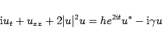
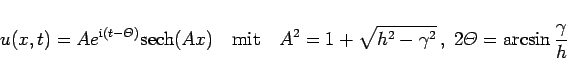
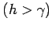

Inhalt Index DeskTop Bronstein

 Differentialgleichungen Partielle Differentialgleichungen Nichtlineare partielle Differentialgleichungen, Solitonen
Differentialgleichungen Partielle Differentialgleichungen Nichtlineare partielle Differentialgleichungen, Solitonen


|  | (9.164) |
hat zwei Parameter (h Antriebsstärke,  Reibungskoeffizient), von deren Werten die Stabiliät der Lösungen sehr empfindlich abhängt.
Reibungskoeffizient), von deren Werten die Stabiliät der Lösungen sehr empfindlich abhängt.
Die folgende Abbildung zeigt ein Stabilitätsdiagramm der Lösungen der PDNLS-Gleichung.
|  | (9.165) |
eine stationäre Lösung. Dieses PDLNS-Soliton wird parametrisches Pumpen  stabilisiert.